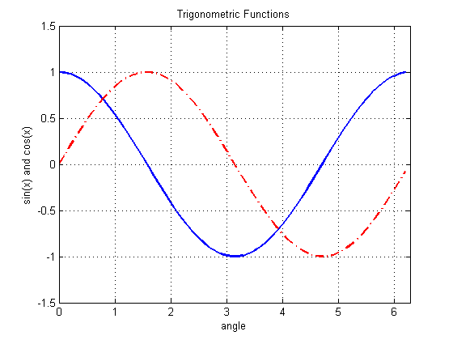

This is an example of how to create an line plot in MATLAB®.
Read about the plot function in the MATLAB® documentation.
Go to MATLAB Plot Gallery
% Define values for x, y1, and y2 x = 0: .1 : 2*pi; y1 = cos(x); y2 = sin(x); % Plot y1 vs. x (blue, solid) and y2 vs. x (red, dashed) figure; plot(x, y1, 'b', x, y2, 'r-.', 'linewidth', 2); % Turn on the grid grid on; % Set the axis limits axis([0 2*pi -1.5 1.5]); % Add title and axis labels title('Trigonometric Functions', 'fontsize', 10); xlabel('angle'); ylabel('sin(x) and cos(x)');